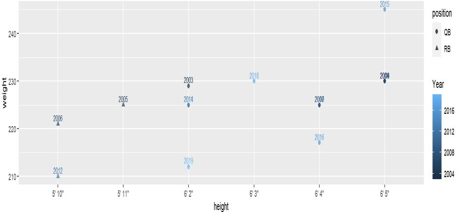
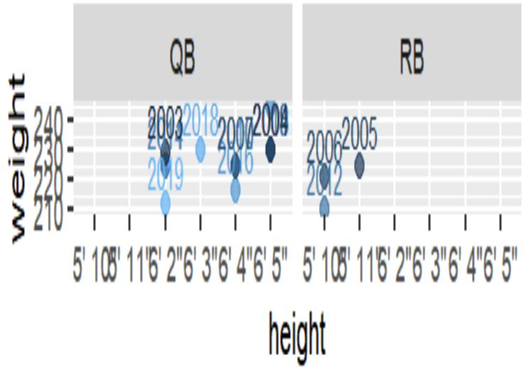
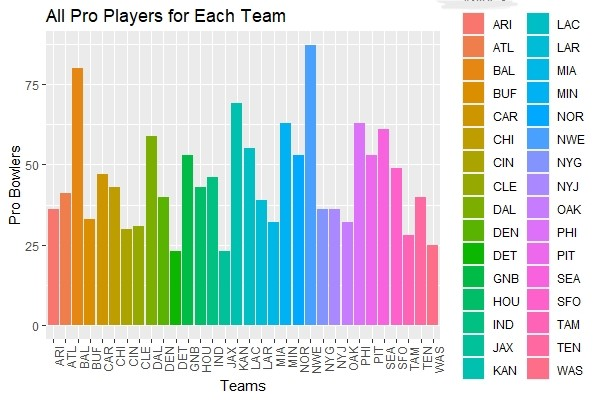
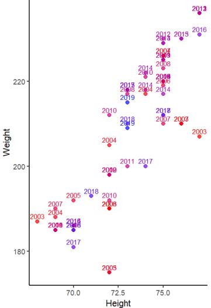

Data Wrangling
What makes the perfect football player?
About the project
For my data wrangling final project, we were tasked with finding two or more datasets and merging them in R and explore a problem we face in business or society. As an avid sports fan, I took it upon myself to look into professional football and how the size of players have changed as the game has evolved. There were three specific questions I wanted answers to, what is the perfect size for an NFL quarterback,which team has the most success in finding all-pro players, and finally have the top receivers in the league become smaller, shifiter players as the league and game have sped up. I built an R script to scrape the webpages and gathered my data from JT-SW collecting the rosters from the 2003 to 2019 season, and additionally gathered all pro results from each season from Pro Football Reference.
While I learned a lot throughtout the process, I have learned that creating aesthetically pleasing plots in RStudio is diffiuclt and I had troubles with it. I also made a lot more work for myself in the scraping data portion of the project by not properly creating a for loop, in part because of the change in team names, and also because I had been using RStudio for no more than half of a semester when this project began. When looking at the graphs, while they are not super pleasing to the eye, I think many conclusions can be drawn from them. For starters, no QB under 6'2" won an MVP from 2003-2019, woth the only 3 players under this height who won MVP were running backs. In the plot below, with the RB and QB's split up I see that the MVP QB's have gotten shorter and smaller if they have changed really at all. It doesnt help that there were mutliple players who won more than one MVP as they can account for mutliple points on the chart. For running backs, although I cannot see any running back other than Christian McCaffrey winning an MVP in the next decade, the formula seems to be to get a guy under 5'11" and under 225 lbs. While the three guys fit that criteria, drafting a running back who fits that does not guarantee an MVP season by any means.
 
The All Pro Results
The top teams in developing all pro players were easily the Patriots and the Ravens, this is obvious wen looking back at it as the Patriots were in the midst of the greatest dynasty ever and the Ravens were annually in the hunt to make the Super Bowl. We can see on the other side of the coin, Detroit and Jacksonville both were at the bottom of the list and stuggled mightily during the 2003-2019 season. The graph below is what I was most intrigued in when doing the project, and while I think therre is some story to be told from it, it was not the one I expected. Looking back there is the biggest collection of players around the 6'0.5" and 220 lb mark, which I would never have guessed as the typical all pro reciever. But the story I believe is that in 2003, the smaller, shifiter guys were the all pros and as passing became a bigger part, the league turned to the taller, bigger recievers. In the process of this, the game of football got much faster, and the recievers had to become smaller and quicker again, wile still being able to be as fast as can be. I think we will see this trend of recievers being bigger continue but there will always be a place for a shorter, blazer on the football field. I look forward to see how the trends carry on as we progress into the next era of the NFL.
 